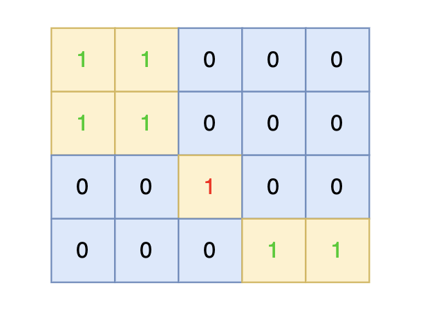
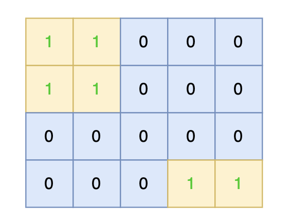
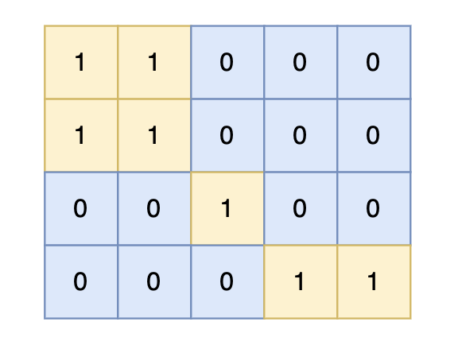

101.孤岛的总面积
题目描述
给定一个由 1（陆地）和 0（水）组成的矩阵，岛屿指的是由水平或垂直方向上相邻的陆地单元格组成的区域，且完全被水域单元格包围。孤岛是那些位于矩阵内部、所有单元格都不接触边缘的岛屿。
现在你需要计算所有孤岛的总面积，岛屿面积的计算方式为组成岛屿的陆地的总数。
输入描述
第一行包含两个整数 N, M，表示矩阵的行数和列数。之后 N 行，每行包含 M 个数字，数字为 1 或者 0。
输出描述
输出一个整数，表示所有孤岛的总面积，如果不存在孤岛，则输出 0。
4 5
1 1 0 0 0
1 1 0 0 0
0 0 1 0 0
0 0 0 1 1
解答
package main
import "fmt"
var ans int
var dirs = [][]int{{-1, 0}, {1, 0}, {0, -1}, {0, 1}}
func maxAreaOfIsland(grid [][]int) int {
m, n := len(grid), len(grid[0])
var travel func(i, j int)
travel = func(i, j int) {
if i < 0 || i >= m || j < 0 || j >= n || grid[i][j] == 0 {
return
}
ans++
grid[i][j] = 0
for _, val := range dirs {
ix, iy := i+val[0], j+val[1]
travel(ix, iy)
}
}
for i := 0; i < m; i++ {
if grid[i][0] == 1 {
travel(i, 0)
}
if grid[i][n-1] == 1 {
travel(i, n-1)
}
}
for i := 0; i < n; i++ {
if grid[0][i] == 1 {
travel(0, i)
}
if grid[m-1][i] == 1 {
travel(m-1, i)
}
}
ans = 0
for i := 0; i < m; i++ {
for j := 0; j < n; j++ {
if grid[i][j] == 1 {
travel(i, j)
}
}
}
return ans
}
func main() {
var n, m int
fmt.Scan(&m, &n)
grid := make([][]int, m)
for i := range grid {
grid[i] = make([]int, n)
}
for i := 0; i < m; i++ {
for j := 0; j < n; j++ {
fmt.Scan(&grid[i][j])
}
}
res := maxAreaOfIsland(grid)
fmt.Println(res)
}
102. 沉没孤岛
给定一个由 1（陆地）和 0（水）组成的矩阵，岛屿指的是由水平或垂直方向上相邻的陆地单元格组成的区域，且完全被水域单元格包围。孤岛是那些位于矩阵内部、所有单元格都不接触边缘的岛屿。
现在你需要将所有孤岛“沉没”，即将孤岛中的所有陆地单元格（1）转变为水域单元格（0）。
输入描述：
第一行包含两个整数 N, M，表示矩阵的行数和列数。
之后 N 行，每行包含 M 个数字，数字为 1 或者 0，表示岛屿的单元格。
输出描述
输出将孤岛“沉没”之后的岛屿矩阵


解答
package main
import (
"fmt"
)
var dir = [4][2]int{{-1, 0}, {0, -1}, {1, 0}, {0, 1}} // 保存四个方向
func dfs(grid [][]int, x int, y int) {
grid[x][y] = 2
for i := 0; i < 2; i++ { // 向四个方向遍历
nextx := x + dir[i][0]
nexty := y + dir[i][1]
// 超过边界
if nextx < 0 || nextx >= len(grid) || nexty < 0 || nexty >= len(grid[0]) {
continue
}
// 不符合条件，不继续遍历
if grid[nextx][nexty] == 0 || grid[nextx][nexty] == 2 {
continue
}
dfs(grid, nextx, nexty)
}
}
func main() {
var n, m int
fmt.Scan(&n, &m)
grid := make([][]int, n)
for i := range grid {
grid[i] = make([]int, m)
for j := range grid[i] {
fmt.Scan(&grid[i][j])
}
}
// 步骤一：
// 从左侧边，和右侧边 向中间遍历
for i := 0; i < n; i++ {
if grid[i][0] == 1 {
dfs(grid, i, 0)
}
if grid[i][m-1] == 1 {
dfs(grid, i, m-1)
}
}
//grid := [][]int{
// {1, 1, 0, 0, 0},
// {1, 1, 0, 0, 0},
// {0, 0, 1, 0, 0},
// {0, 0, 0, 1, 1},
//}
//n, m = len(grid), len(grid[0])
// 步骤一
// 从上边和下边 向中间遍历
for j := 0; j < m; j++ {
if grid[0][j] == 1 {
dfs(grid, 0, j)
}
if grid[n-1][j] == 1 {
dfs(grid, n-1, j)
}
}
// 步骤二、步骤三
for i := 0; i < n; i++ {
for j := 0; j < m; j++ {
if grid[i][j] == 1 {
grid[i][j] = 0
}
if grid[i][j] == 2 {
grid[i][j] = 1
}
}
}
// 打印最终的网格
for i := 0; i < n; i++ {
for j := 0; j < m; j++ {
fmt.Print(grid[i][j], " ")
}
fmt.Println()
}
}
103. 水流问题
现有一个 N × M 的矩阵，每个单元格包含一个数值，这个数值代表该位置的相对高度。矩阵的左边界和上边界被认为是第一组边界，而矩阵的右边界和下边界被视为第二组边界。
矩阵模拟了一个地形，当雨水落在上面时，水会根据地形的倾斜向低处流动，但只能从较高或等高的地点流向较低或等高并且相邻（上下左右方向）的地点。我们的目标是确定那些单元格，从这些单元格出发的水可以达到第一组边界和第二组边界。
输入描述：
第一行包含两个整数 N 和 M，分别表示矩阵的行数和列数。
后续 N 行，每行包含 M 个整数，表示矩阵中的每个单元格的高度。
输出描述：
输出共有多行，每行输出两个整数，用一个空格隔开，表示可达第一组边界和第二组边界的单元格的坐标，输出顺序任意。
解答
package main
import (
"fmt"
)
var n, m int
var dir = [4][2]int{{-1, 0}, {0, -1}, {1, 0}, {0, 1}}
func dfs(grid [][]int, visited [][]bool, x int, y int) {
if visited[x][y] {
return
}
visited[x][y] = true
for i := 0; i < 4; i++ {
nextx := x + dir[i][0]
nexty := y + dir[i][1]
if nextx < 0 || nextx >= n || nexty < 0 || nexty >= m {
continue
}
if grid[x][y] > grid[nextx][nexty] {
continue
}
dfs(grid, visited, nextx, nexty)
}
}
func main() {
fmt.Scan(&n, &m)
grid := make([][]int, n)
for i := range grid {
grid[i] = make([]int, m)
for j := range grid[i] {
fmt.Scan(&grid[i][j])
}
}
firstBorder := make([][]bool, n)
secondBorder := make([][]bool, n)
for i := range firstBorder {
firstBorder[i] = make([]bool, m)
secondBorder[i] = make([]bool, m)
}
// 从最上和最下行的节点出发，向高处遍历
for i := 0; i < n; i++ {
dfs(grid, firstBorder, i, 0) // 遍历最左列，接触第一组边界
dfs(grid, secondBorder, i, m-1) // 遍历最右列，接触第二组边界
}
// 从最左和最右列的节点出发，向高处遍历
for j := 0; j < m; j++ {
dfs(grid, firstBorder, 0, j) // 遍历最上行，接触第一组边界
dfs(grid, secondBorder, n-1, j) // 遍历最下行，接触第二组边界
}
for i := 0; i < n; i++ {
for j := 0; j < m; j++ {
// 如果这个节点，从第一组边界和第二组边界出发都遍历过，就是结果
if firstBorder[i][j] && secondBorder[i][j] {
fmt.Printf("%d %d\n", i, j)
}
}
}
}
104.建造最大岛屿
题目描述：
给定一个由 1（陆地）和 0（水）组成的矩阵，你最多可以将矩阵中的一格水变为一块陆地，在执行了此操作之后，矩阵中最大的岛屿面积是多少。
岛屿面积的计算方式为组成岛屿的陆地的总数。岛屿是被水包围，并且通过水平方向或垂直方向上相邻的陆地连接而成的。你可以假设矩阵外均被水包围。
输入描述：
第一行包含两个整数 N, M，表示矩阵的行数和列数。之后 N 行，每行包含 M 个数字，数字为 1 或者 0，表示岛屿的单元格。
输出描述：
输出一个整数，表示最大的岛屿面积。
输入示例：
4 5
1 1 0 0 0
1 1 0 0 0
0 0 1 0 0
0 0 0 1 1
输出示例
6

package main
import (
"fmt"
)
var n, m int
var dir = [4][2]int{{0, 1}, {1, 0}, {-1, 0}, {0, -1}} // 四个方向
var count int
var gridNum map[int]int
var visitedGrid map[int]bool
func dfs(grid [][]int, visited [][]bool, x int, y int, mark int) {
if visited[x][y] || grid[x][y] == 0 {
return // 终止条件：访问过的节点 或者 遇到海水
}
visited[x][y] = true // 标记访问过
grid[x][y] = mark // 给陆地标记新标签
count++
for i := 0; i < 4; i++ {
nextx, nexty := x+dir[i][0], y+dir[i][1]
if nextx < 0 || nextx >= n || nexty < 0 || nexty >= m {
continue // 越界了，直接跳过
}
dfs(grid, visited, nextx, nexty, mark)
}
}
func main() {
fmt.Scan(&n, &m)
grid := make([][]int, n)
for i := range grid {
grid[i] = make([]int, m)
for j := range grid[i] {
fmt.Scan(&grid[i][j])
}
}
visited := make([][]bool, n)
for i := range visited {
visited[i] = make([]bool, m)
}
gridNum = make(map[int]int)
mark := 2 // 记录每个岛屿的编号
isAllGrid := true // 标记是否整个地图都是陆地
for i := 0; i < n; i++ {
for j := 0; j < m; j++ {
if grid[i][j] == 0 {
isAllGrid = false
}
if !visited[i][j] && grid[i][j] == 1 {
count = 0
dfs(grid, visited, i, j, mark) // 将与其链接的陆地都标记上 true
gridNum[mark] = count // 记录每一个岛屿的面积
mark++ // 记录下一个岛屿编号
}
}
}
if isAllGrid {
fmt.Println(n * m) // 如果都是陆地，返回全面积
return // 结束程序
}
// 以下逻辑是根据添加陆地的位置，计算周边岛屿面积之和
var result int // 记录最后结果
visitedGrid = make(map[int]bool) // 标记访问过的岛屿
for i := 0; i < n; i++ {
for j := 0; j < m; j++ {
if grid[i][j] == 0 {
count = 1 // 记录连接之后的岛屿数量
visitedGrid = make(map[int]bool) // 每次使用时，清空
for k := 0; k < 4; k++ {
neari, nearj := i+dir[k][0], j+dir[k][1] // 计算相邻坐标
if neari < 0 || neari >= n || nearj < 0 || nearj >= m {
continue
}
if visitedGrid[grid[neari][nearj]] {
continue // 添加过的岛屿不要重复添加
}
// 把相邻四面的岛屿数量加起来
count += gridNum[grid[neari][nearj]]
visitedGrid[grid[neari][nearj]] = true // 标记该岛屿已经添加过
}
}
result = max(result, count)
}
}
fmt.Println(result)
}
func max(a, b int) int {
if a > b {
return a
}
return b
}